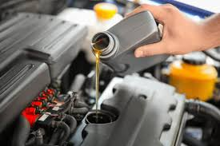
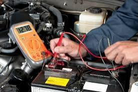

Algunas de las ventajas de llevar tu auto a un taller mecánico serian:
Maquinaria y herramientas adecuadas: En un taller, cuentan con todas las herramientas necesarias para reparar cualquier tipo de desperfecto. Esto evita que tengas que comprar herramientas específicas para una sola avería y garantiza un trabajo seguro. Conocimientos profesionales: Los mecánicos tienen amplios conocimientos en el área. Al llevar tu vehículo al taller, te aseguras de que alguien con experiencia realice las reparaciones, evitando problemas futuros. Garantía: Si algo sale mal después de la reparación, la garantía del taller cubrirá la corrección sin costo adicional.
NOTICIAS
NOTICIAS
BIENVENIDO A TU MECÁNICA DE CONFIANZA

LIMPIEZA DE FILTRO DE AIRE

CAMBIO DE ACEITE
Limpia y protege las piezas móviles del motor contra el desgaste. También ayuda a filtrar impurezas, residuos y contaminantes del motor, manteniéndolo limpio y eficiente. No solo eso, el aceite de motor también previene la corrosión y el óxido.
